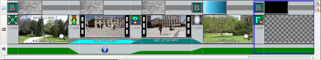
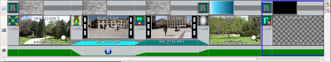

Description of the timeline
The timeline lists the slides
which compose the project: it consists of 3 tracks:

The timeline has 2 different display modes:

 |
The background track:
slides are listed from left to right. For each slide are
shown:
|
 |
The mounting track:
slides are listed from left to right. Each slide is
represented by:
|
 |
The music track:
|
 .
. The timeline has 2 different display modes:
- Preview mode
In preview mode, priority is
given to the multimedia player, which occupies the main part
of the available area.
The timeline is reduced to a single line.
The timeline is reduced to a single line.
- Sheet mode
In sheet mode, priority is given
to the slide thumbnails, which occupy the main part of the
available area.
The multimedia player is reduced to a small space located near the toolbar.
Slide thumbnails are shown on several lines like staves in sheet music.
The multimedia player is reduced to a small space located near the toolbar.
Slide thumbnails are shown on several lines like staves in sheet music.
To modify an element:
- To modify the background, double-click the thumbnail of
the background. This action opens the
Define background dialog.
- To modify the entering slide transition, double-click the
slide transition. This action opens the
Define the entering slides transitions dialog.
- To modify the slide (framing, filter, animation, etc.)
double-click the thumbnail. This action opens the Modify
slides dialog.
- To modify the music associated with the slide,
double-click the zone corresponding to the slide musical
track. This action opens the Define
the music track dialog.
To reorder the slide in the timeline
- Simply drag the slide to a new position with the mouse (drag & drop)
To modify the display of the timeline:
The timeline settings commands
are in the status bar, to the right, at the bottom of the main
window.
 Increases the size of the thumbnails but reduces the number of
thumbnails shown in the timeline.
Increases the size of the thumbnails but reduces the number of
thumbnails shown in the timeline.
 Reduces the size of the thumbnails and increases the number of
thumbnails shown in the timeline.
Reduces the size of the thumbnails and increases the number of
thumbnails shown in the timeline.
 Switches the display to the
preview mode
Switches the display to the
preview mode
Switches the display to the sheet mode
Increases the size of the thumbnails but reduces the number of
thumbnails shown in the timeline.
Reduces the size of the thumbnails and increases the number of
thumbnails shown in the timeline. Switches the display to the
preview modeSwitches the display to the sheet mode
See also
ffDiaporama 1.0